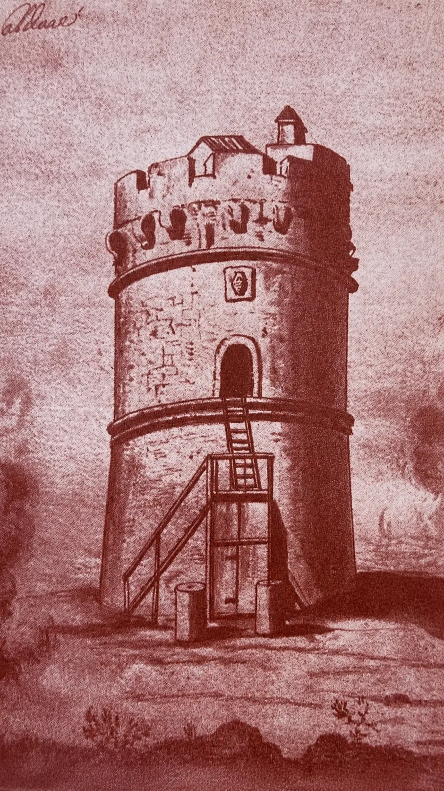

Tor Caldara: il respiro del vulcano sotto il bosco di Anzio
Una fonte calda di Mecenate, una solfatara che ancora fuma, le miniere di zolfo, una torre del Cinquecento e l'ultimo lembo di foresta sul mare: il pezzo di costa tra Anzio e Lavinio dove la terra non ha mai smesso di parlare.
Il nome viene da una fonte calda
Tra Anzio e Lavinio, in un tratto di costa rimasto verde, c'è un bosco fitto e, in mezzo al bosco, una radura che fuma. Il nome, Caldara, non nasce con la torre: viene da molto prima. Sul ciglio della falesia, duemila anni fa, sorgeva la villa di Mecenate, l'amico di Augusto e protettore dei poeti, e in quella villa c'era una sorgente di acqua calda che le fonti chiamano Caldanum. Da quel «caldo» discende, secondo gli eruditi, il nome della torre e poi della riserva. La stessa acqua tiepida che scaldava i bagni del ricco romano sgorga ancora oggi, in mezzo ai lecci.
Il vulcano che non si vede
Tor Caldara è una solfatara: non un vulcano con un cratere, ma il suo respiro lento. A venticinque chilometri da qui c'è il grande vulcano dei Colli Albani, spento da ventimila anni; ma sotto terra qualcosa cova ancora, e qui viene a galla. Dal suolo salgono gas, soprattutto anidride carbonica e idrogeno solforato (quello che sa di uova marce); si formano piccole pozze tiepide; e ogni tanto spuntano i vulcanelli di fango, minuscoli coni alti pochi centimetri che ribollono. Intorno, il terreno si tinge di giallo e di arancio per i cristalli di zolfo e di gesso. È un posto che pare di un altro pianeta, ed è esattamente per questo che, come vedremo, ci hanno girato dentro centinaia di film.
Lo zolfo, le caldane e i minatori
Quel giallo, per secoli, è stato denaro. Lo zolfo di Tor Caldara si raccoglieva già in età romana: lo raccontano i resti di olle di terracotta forate, i contenitori usa e getta della lavorazione. Ma la storia documentata comincia nel Cinquecento. Nel 1569 papa Pio V concesse a Marcantonio Colonna, signore di Nettuno, il diritto di scavare, raffinare e vendere lo zolfo della solfatara, dietro cinquecento scudi l'anno. Si scavava a cielo aperto, con trincee e pozzi, e in galleria; poi il minerale si metteva a «cuocere» in forni ricavati nel terreno, le caldane, per separare lo zolfo puro dalla sabbia. La miniera era piccola, ma per l'economia del posto contava. Andò avanti senza interruzioni fino verso il 1850, quando prima lo zolfo siciliano e poi un nuovo metodo americano la resero fuori mercato.
Di quel lavoro è rimasta anche una scritta. Una lapide, oggi murata nella torre dell'orologio di Nettuno, ricorda che Marcantonio Colonna, «scoperte le miniere nell'agro anziate e costruiti gli edifici per lavorarle», fortificò Nettuno con nuove opere, nell'anno 1564.
La torre contro i pirati
La torre che dà il nome al luogo fu costruita nel 1560 per volere di Pio IV, dopo che la flotta pontificia era stata annientata nella battaglia dell'isola di Gerba. Cinque anni più tardi Marcantonio Colonna la fortificò: serviva a difendere questa costa dagli sbarchi dei pirati barbareschi, e insieme a proteggere le miniere. Tonda, una decina di metri di diametro e nove di altezza, con la porta d'ingresso rialzata cui si saliva per una scaletta, restò in efficienza finché durò lo zolfo. A danneggiarla furono i cannoni inglesi nel febbraio del 1813, la stessa incursione che semidistrusse Porto d'Anzio.

Il bosco che è sopravvissuto
Tolto lo zolfo, è rimasto il bosco. I quarantaquattro ettari della riserva custodiscono una macchia mediterranea fitta, fatta di leccio, sughera, corbezzolo ed erica arborea, una delle ultime testimonianze delle antiche foreste che coprivano la costa del basso Lazio prima che la mano dell'uomo le riducesse a campi e pascoli. Dal 1988 è una Riserva Naturale Regionale, ed è anche un sito protetto della rete europea Natura 2000. Tra le rarità c'è una piccola pianta che a queste latitudini quasi non dovrebbe esistere: il Cyperus polystachyos, una specie di mezzo-papiro tropicale che in Italia cresce in due soli posti, tutti e due con una solfatara. Qui sopravvive proprio dove il terreno fuma e nessun'altra pianta riesce a spuntare.
Quattrocento film in una solfatara
Quel paesaggio di sabbia, fumarole, laghetti sulfurei e ruderi, a un passo dagli stabilimenti di Dino De Laurentiis sulla Pontina, ha fatto di Tor Caldara un set naturale: ci sono stati girati oltre quattrocento film. La solfatara faceva da deserto, da terra preistorica, da inferno biblico. Ci passarono i grandi peplum degli anni Cinquanta e Sessanta (Quo Vadis, Ulisse, Ben Hur) e poi gli spaghetti western, da Per un pugno di dollari di Sergio Leone (1964) a Django di Sergio Corbucci (1966). Proprio dentro la torre Pier Paolo Pasolini ambientò alcune scene del suo Vangelo secondo Matteo (1964), con i lebbrosi che Gesù guarisce. Decenni dopo sarebbe tornato qui anche il premio Oscar Terrence Malick.
La spiaggia dello sbarco
C'è un'altra ragione per cui questo bosco è entrato nella storia. All'alba del 22 gennaio 1944 la prima divisione britannica sbarcò proprio qui, sul tratto di costa tra Tor Caldara e Tor San Lorenzo che il piano alleato chiamava «Peter Beach», mentre gli americani toccavano terra tra Nettuno e Torre Astura. Era l'operazione Shingle, il tentativo di aggirare la linea tedesca a Cassino. Le truppe inglesi usarono il bosco della riserva come campo base, nascosto agli aerei nemici: un sentiero, ancora oggi, ricalca un loro canale di scolo. Lo sbarco riuscì senza colpo ferire, ma poi si trasformò in mesi di trincea e di sangue, sotto la stessa terra che gli scavi delle miniere avevano già bucato.
La falesia, un libro di pietra
Sotto il bosco e la torre, a strapiombo sul mare, corre una parete di roccia che è un libro aperto sul tempo profondo. Nei suoi cento metri di spessore si leggono, uno sull'altro, antichi fondali marini: dalle marne grigie del Pliocene alle sabbie dei mari freddi del Pleistocene. Tra i fossili compare la Arctica islandica, una vongola che oggi vive nei mari dell'Atlantico del nord: trovarla qui significa che il Mediterraneo, in un lontano passato glaciale, fu un mare freddo. Vicino alle sorgenti, lo zolfo ha perfino preso il posto del guscio di certe conchiglie, pietrificandole di giallo. E più a sud, verso Capo d'Anzio, la stessa parete diventa macco, la calcarenite chiara con cui furono tagliati i blocchi del vallo di Antium: la città, alla lettera, è fatta del fondale di un mare scomparso.
La prossima volta che cammini nella riserva, fai questa prova. Parti dal bosco fresco e ombroso, e in pochi minuti arriva alla radura che fuma: passi da una foresta a un altro mondo, e capisci perché qui ci hanno girato il deserto e la preistoria. Poi affacciati dalla falesia: davanti hai il mare, sotto i piedi hai milioni di anni, alle spalle la fonte calda di un poeta di Augusto. Pochi luoghi, in così poco spazio, tengono insieme tanto tempo.
Cronologia essenziale
| Data | Evento | Fonte |
|---|---|---|
| Pliocene–Pleistocene | La falesia registra cento metri di mari antichi, con la vongola artica dei mari freddi | Bellotti et al. 1997 |
| Età imperiale | Lo zolfo è già estratto e lavorato (olle forate di terracotta) | ISPRA 2020 |
| I sec. a.C. – I d.C. | La villa di Mecenate e la fonte calda «Caldanum» sulla falesia | Lombardi 1847 |
| 1560 | Pio IV fa erigere la torre dopo la disfatta di Gerba | Tomassetti 1910 |
| 1564–1569 | Marcantonio Colonna fortifica la costa e ottiene la concessione dello zolfo (bolla del 25 aprile 1569) | iscrizione; ISPRA 2020 |
| febbraio 1813 | Le navi inglesi bombardano la costa e danneggiano la torre | Lombardi 1847 |
| ~1850 | Si spegne l'attività mineraria dello zolfo | ISPRA 2020 |
| 22 gennaio 1944 | Sbarco britannico su «Peter Beach», tra Tor Caldara e Tor San Lorenzo | ISPRA 2020 |
| 1988 | Istituzione della Riserva Naturale Regionale di Tor Caldara | L.R. 50/1988 |